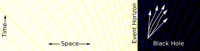

The no-hair conjecture postulates that, once it achieves a stable condition after formation, a black hole has only three independent physical properties: mass, charge, and angular momentum; the black hole is otherwise featureless. If the conjecture is true, any two black holes that share the same values for these properties, or parameters, are indistinguishable from one another. The degree to which the conjecture is true for real black holes under the laws of modern physics, is currently an unsolved problem.
These properties are special because they are visible from outside a black hole. For example, a charged black hole repels other like charges just like any other charged object. Similarly, the total mass inside a sphere containing a black hole can be found by using the gravitational analog of Gauss's law, the ADM mass, far away from the black hole. Likewise, the angular momentum can be measured from far away using frame dragging by the gravitomagnetic field.
a black hole eventually achieves a stable state with only three parameters, there is no way to avoid losing information about the initial conditions: the gravitational and electric fields of a black hole give very little information about what went in. The information that is lost includes every quantity that cannot be measured far away from the black hole horizon, including approximately conserved quantum numbers such as the total baryon number and lepton number. This behavior is so puzzling that it has been called the black hole information loss paradox.
Physical Properties
The simplest static black holes have mass but neither electric charge nor angular momentum. These black holes are often referred to as Schwarzschild black holes after Karl Schwarzschild who discovered this solution in 1916. The popular notion of a black hole "sucking in everything" in its surroundings is therefore correct only near a black hole's horizon; far away, the external gravitational field is identical to that of any other body of the same mass.
While the mass of a black hole can take any positive value, the charge and angular momentum are constrained by the mass. In Planck units, the total electric charge Q and the total angular momentum J are expected to satisfy...
Black hole classification
Class
Approx. mass
Approx. radius
Supermassive black hole
105-1010MSun
0.001-400 AU
Intermediate mass black hole
103MSun
103 km≈REarth
Stellar black hole
10 MSun
30 km
Micro black hole
Up to MMoon
up to 0.1 mm
Event horizon
Far away from the black hole, a particle can move in any direction, as illustrated by the set of arrows. It is restricted only by the speed of light.
Closer to the black hole, spacetime starts to deform. There are more paths going towards the black hole than paths moving away.

Inside of the event horizon, all paths bring the particle closer to the center of the black hole. It is no longer possible for the particle to escape.